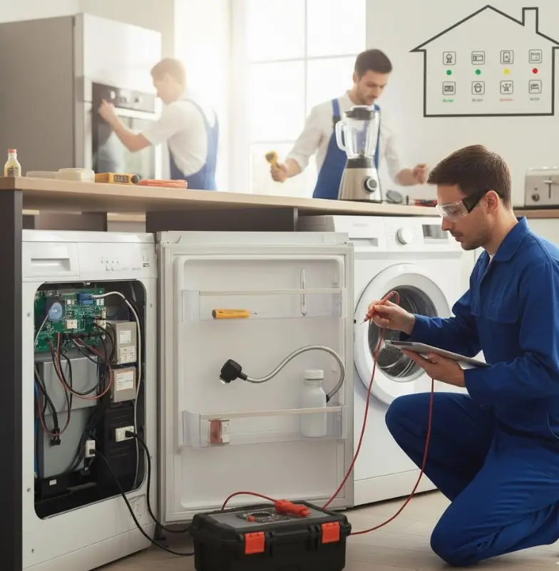

قائمة فحص موسمية لصيانة الأجهزة المنزلية
دليل عملي للاستعداد للمواسم المختلفة، اكتشاف المشكلات مبكرًا، والحفاظ على كفاءة الأجهزة وسلامتها.
مع كل موسم جديد تتغير طريقة استخدام الأجهزة المنزلية، ويزداد الضغط على بعض الأجهزة حسب احتياجات البيت. لذلك فإن الفحص الموسمي ليس رفاهية؛ بل وسيلة عملية لاكتشاف المشكلات مبكرًا والحفاظ على كفاءة الأجهزة وتقليل احتمالات الأعطال المفاجئة.
في هذا الدليل من أرشيف التوكيل للصيانة نستعرض قائمة فحص عملية للأجهزة المنزلية، مع التركيز على الثلاجات، الغسالات، المجففات، أجهزة التكييف، سخانات المياه، وعناصر الأمان الكهربائي.
جهازك محتاج فحص قبل الموسم؟
يمكنك التواصل مع التوكيل للصيانة للاستفسار عن الخدمة المناسبة، وطلب زيارة فني إلى المنزل أو الاستفسار عن إمكانية إحضار الجهاز إلى مقر الشركة.
احجز أو استفسر عن الخدمةلماذا تحتاج أجهزتك المنزلية إلى صيانة موسمية؟
تساعد الصيانة الموسمية على اكتشاف علامات التلف أو ضعف الأداء قبل أن تتحول إلى عطل كبير. كما أن الفحص والتنظيف المناسبين قد يساعدان الجهاز على العمل في ظروف أفضل، خصوصًا عندما يتغير حجم الاستخدام مع تغير الفصول.
ومن الجوانب المهمة أيضًا السلامة؛ ففحص الأسلاك، المقابس، الخراطيم والتوصيلات يمكن أن يكشف مشكلات تستحق المعالجة قبل أن تتسبب في تسريب أو تلف أو خطر كهربائي.
قائمة فحص موسمية للأجهزة المنزلية
أجهزة التبريد والتكييف قبل الصيف
- تنظيف أو فحص فلاتر الهواء للتأكد من عدم وجود انسداد يعيق تدفق الهواء.
- فحص الوحدة الخارجية والتأكد من عدم وجود عوائق تمنع التهوية.
- فحص دائرة التبريد بواسطة فني مختص إذا كان التكييف يعاني من ضعف واضح في التبريد أو علامات غير طبيعية.
أجهزة التدفئة وسخانات المياه قبل الشتاء
- فحص السخان بحثًا عن أي تسريب أو علامات تآكل.
- فحص التوصيلات ومكونات الأمان وفق تعليمات الشركة المصنعة.
- التأكد من سلامة منظم الحرارة وعدم وجود سلوك غير طبيعي أثناء التشغيل.
الأجهزة العامة مرتين سنويًا
- تنظيف المناطق المسموح بها حول المكثف في الثلاجة والمجمد.
- فحص خراطيم الغسالة وغسالة الأطباق بحثًا عن تشققات أو انتفاخ أو تسريب.
- تنظيف فلاتر الغسالات والمجففات حسب تعليمات كل جهاز.
خطوات بسيطة لفحص الثلاجة قبل موجات الحر
مع ارتفاع درجات الحرارة تعمل الثلاجة في ظروف أكثر إجهادًا، لذلك من المفيد فحصها قبل بداية الفترة شديدة الحرارة.
- فحص منطقة المكثف: إزالة الأتربة من المناطق التي يسمح دليل الجهاز بتنظيفها، مع فصل الكهرباء أولًا.
- فحص جوان الباب: تأكد من نظافته وسلامته وأن الباب يغلق بإحكام دون تسريب واضح للهواء.
- مراجعة درجة الحرارة: استخدم الإعداد الموصى به في دليل الثلاجة، وتجنب ضبطها على درجة أبرد من الحاجة.
- مراقبة الأداء: إذا لاحظت ضعف تبريد مستمرًا أو صوتًا غير معتاد أو تجمع مياه، فالأفضل طلب فحص متخصص.
كيف تحضر غسالة الملابس والمجفف للموسم؟
فحص خراطيم المياه
افحص خراطيم دخول المياه في الغسالة بحثًا عن تشققات أو انتفاخ أو تسريب. أي خرطوم تظهر عليه علامات تلف يجب التعامل معه سريعًا بدل انتظار حدوث تسريب أكبر.
تنظيف فلتر الغسالة
تنظيف الفلتر وفق تعليمات موديل الغسالة يساعد على التخلص من الأوساخ والأجسام الصغيرة التي قد تؤثر على التصريف والأداء.
تنظيف نظام تهوية المجفف
تراكم الوبر داخل مسار التهوية قد يقلل كفاءة التجفيف ويرفع المخاطر المرتبطة بالحرارة. لذلك يجب تنظيف الفلتر ومسار التهوية بالطريقة المسموح بها من الشركة المصنعة وبشكل منتظم.
فحص سخان المياه قبل الشتاء
السخان من الأجهزة التي يزداد الاعتماد عليها خلال الشتاء، ولذلك يستحق فحصًا وقائيًا قبل زيادة ساعات التشغيل.
- فحص علامات التسريب حول الخزان والوصلات.
- مراجعة مكونات الأمان وفق دليل الجهاز وعدم العبث بها إذا لم تكن مؤهلًا لذلك.
- فحص الترسبات إذا كان الجهاز يعاني من أعراض مرتبطة بها أو حسب جدول الصيانة الموصى به.
- الاستعانة بفني مؤهل عند وجود مشكلة كهربائية أو تسريب أو خلل في مكونات السخان.
خطوات فحص أمان الأجهزة الكهربائية في المنزل
فحص الأسلاك والمقابس
- تفقد الأسلاك بحثًا عن قطع أو تشقق أو اهتراء.
- تأكد من ثبات القابس وعدم وجود سخونة أو ارتخاء غير طبيعي في المقبس.
- لا تستخدم جهازًا بسلك تالف حتى يتم إصلاح المشكلة بالطريقة المناسبة.
تجنب التحميل الزائد
توصيل عدة أجهزة عالية الاستهلاك في مشترك واحد قد يرفع الحمل على الدائرة. وزّع الأحمال واستخدم مقابس وتجهيزات كهربائية مناسبة لقدرة الأجهزة.
إبعاد الأجهزة عن المياه
في المطبخ والحمام خصوصًا، يجب الحفاظ على مسافة آمنة بين الأجهزة ومصادر المياه، وعدم تشغيل أو لمس الأجهزة الكهربائية بأيدٍ مبللة.
الفحص المبكر أريح من العطل المفاجئ
لو جهازك بدأ يغيّر صوته أو أداؤه أو ظهرت علامة غير طبيعية، لا تنتظر حتى يتوقف تمامًا. التوكيل للصيانة يوفر خدمة فحص وصيانة للأجهزة المنزلية، مع إمكانية طلب زيارة منزلية أو الاستفسار عن الخدمة في مقر الشركة.
احجز صيانة الآنأسئلة شائعة
هل يجب استخدام منظفات قوية لتنظيف الأجهزة؟
ليس بالضرورة. الأفضل الالتزام بمواد التنظيف والطريقة التي توصي بها الشركة المصنعة لكل جهاز، لأن بعض المواد القوية قد تضر الأسطح أو المكونات الداخلية.
جهازي يصدر صوتًا غريبًا لكنه ما زال يعمل، ماذا أفعل؟
الصوت غير المعتاد يستحق الانتباه، خصوصًا إذا كان جديدًا أو يزداد مع الوقت. أوقف الجهاز إذا كان هناك خطر واضح أو رائحة احتراق أو مشكلة كهربائية، واطلب فحصًا متخصصًا عند الحاجة.
كم مرة يجب تنظيف فلتر غسالة الأطباق؟
تختلف الفترة حسب الموديل وعدد مرات الاستخدام. يمكن الاعتماد على تعليمات الشركة المصنعة، مع فحص الفلتر دوريًا وتنظيفه عندما تتراكم عليه بقايا الطعام.
هل انقطاع الكهرباء يؤثر على الأجهزة الحديثة؟
التقلبات والانقطاعات المفاجئة قد تؤثر على بعض الدوائر الإلكترونية الحساسة. يمكن الاستعانة بوسيلة حماية كهربائية مناسبة حسب نوع الجهاز وتعليمات الشركة المصنعة.
هل يجب فصل الأجهزة الصغيرة بعد الاستخدام؟
من الأفضل فصل الأجهزة الصغيرة التي لا تحتاج إلى تشغيل مستمر بعد استخدامها، خاصة عندما لا يكون هناك سبب لتركها موصولة بالكهرباء.
هل تواجه مشكلة أو عطلاً في جهازك؟
تواصل مع فريق "التوكيل للصيانة" الآن للحصول على استشارة فنية وفحص منزلي فوري بأعلى معايير الدقة والأمان.